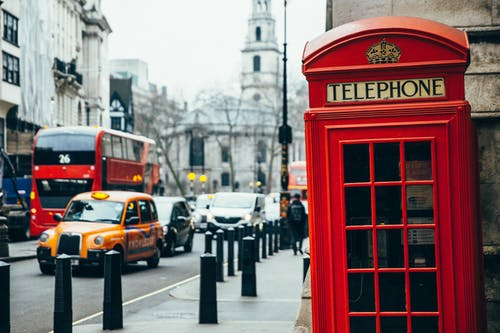

The growth of the built-up area was halted by strict town planning controls in the mid-1950s. Its physical limits more or less correspond to the administrative and statistical boundaries separating the metropolitan county of Greater London from the “home counties” of Kent, Surrey, and Berkshire (in clockwise order) to the south of the river and Buckinghamshire, Hertfordshire, and Essex to the north. The historic counties of Kent, Hertfordshire, and Essex extend in area beyond the current administrative counties with the same names to include substantial parts of the metropolitan county of Greater London, which was formed in 1965. Most of Greater London south of the Thames belongs to the historic county of Surrey, while most of Greater London north of the Thames belongs historically to the county of Middlesex. Area Greater London, 607 square miles (1,572 square km). Pop. (2001) Greater London, 7,172,091; (2011 prelim.) Greater London, 8,173,941.If the border of the metropolis is well defined, its internal structure is immensely complicated and defies description. Indeed, London’s defining characteristic is an absence of overall form. It is physically a polycentric city, with many core districts and no clear hierarchy among them. London has at least two (and sometimes many more) of everything: cities, mayors, dioceses, cathedrals, chambers of commerce, police forces, opera houses, orchestras, and universities. In every aspect it functions as a compound or confederal metropolis.Historically, London grew from three distinct centres: the walled settlement founded by the Romans on the banks of the Thames in the 1st century CE, today known as the City of London, “the Square Mile,” or simply “the City”; facing it across the bridge on the lower gravels of the south bank, the suburb of Southwark; and a mile upstream, on a great southward bend of the river, the City of Westminster. The three settlements had distinct and complementary roles. London, “the City,” developed as a centre of trade, commerce, and banking. Southwark, “the Borough,” became known for its monasteries, hospitals, inns, fairs, pleasure houses, and the great theatres of Elizabethan London—the Rose (1587), the Swan (1595), and the world-famous Globe (1599). Westminster grew up around an abbey, which brought a royal palace and, in its train, the entire central apparatus of the British state—its legislature, executive, and judiciary. It also boasts spacious parks and the most fashionable districts for living and shopping—the West End. The north-bank settlements merged into a single built-up area in the early decades of the 17th century, but they did not combine into a single enlarged municipality. The City of London was unique among Europe’s capital cities in retaining its medieval boundaries. Westminster and other suburbs were left to develop their own administrative structures—a pattern replicated a hundred times over as London exploded in size, becoming the prototype of the modern metropolis.The population of London already exceeded one million by 1800. A century later it reached 6.5 million. The city’s physical expansion was not constrained either by military defenses (a highly influential factor on continental Europe) or by the intervention of state power (so evident in the town planning of Paris, Vienna, Rome, and other capitals of continental Europe). Although much of the land around London was owned by the aristocracy, the church, and other institutions with feudal roots, its development was the work of unfettered capitalism driven by the housing demands of the rising middle class. Free-ranging building speculation engulfed villages and small towns over an ever-widening radius with each improvement in transport technology and purchasing power. The solidly built-up area of London measured some 5 miles (8 km) from east to west in 1750, 15 miles (24 km) in 1850, and 30 miles (50 km) in 1950.